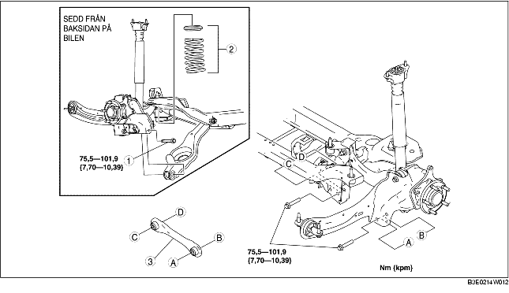

1. Ta loss den bakre givaren för automatisk nivåjustering. (Se DEMONTERING/MONTERING AV GIVARE FÖR AUTOMATISK NIVÅJUSTERING.)
2. Demontera bakre krängningshämmare. (Se DEMONTERING/MONTERING AV BAKRE KRÄNGNINGSHÄMMARE.)
3. Demontera i den ordning som anges i tabellen.
4. Montera i omvänd ordning mot demonteringen.
5. Kontrollera hjulinställningen och justera vid behov.
(Se HJULINSTÄLLNING BAK.)

.
1. Stöd den nedre länkarmen med en domkraft.
2. Lossa bakre nedre länkarmens inre bult.
3. Demontera bakre nedre länkarmsbulten (utsidan).
1. Montera det bakre tvärstaget så att kanten är riktad mot bilens framkant.